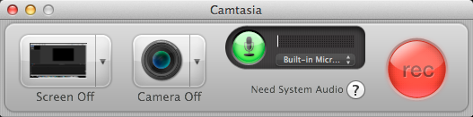
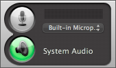

System audio is the sound from your computer or device such as mouse-click sounds, audio playing from your speakers, application music, etc. To record system audio, you must install the latest version of the TechSmith Audio Capture Component. This component is an audio device that allows audio to pass between applications.
If you do not have the TechSmith Audio Capture Component installed, the Recorder will look like this:

Click the Need System Audio help button to install this component.
From here, the steps for installing the component are different depending on the version of Camtasia you are running and your internet connection.
If you did not install Camtasia 2 from the App Store, you will be prompted to run the TechSmith Audio Capture Component installer. Click Install.
If you did install Camtasia directly from the App Store and have an internet connection, Camtasia will launch this download page in a web browser. Download the installer, then navigate to your Downloads folder and run the installer.
If the Need System Audio help button from the Recorder directed you to this topic, you do not have an established internet connection. Make sure you are connected to the internet, then click here or return to the Need System Audio help button to download the installer.
Note: The location of the installed component is MacHD/System/Library/Extentions/TACC.kext.
Restart your computer.
Uninstall the TechSmith Audio Capture Component:
Open Camtasia.
Open Preferences from the Camtasia menu.
In the Recording tab, click Uninstall component.
Record system audio:
Open the Camtasia Recorder.
Click to enable the System Audio button.

If that button is unavailable and you have successfully installed the TechSmith Audio Capture Component, refer to the troubleshooting tips below.
Click the Record button or press Command-Shift-2 to start recording.
Troubleshooting tips and best practices:
Test your setup ahead of time.
A few minutes of verifying your settings and making a short test recording can save time later or mean the difference between capturing or missing audio from a one-time event.
Quit and relaunch programs after changing sound settings.
Camtasia for Mac and other programs may not play sound through the expected output after changing sound settings. Make the system-level changes first and then quit and relaunch Camtasia or other applications if you are getting unexpected playback results.
Update OS X, Camtasia, device drivers, and your application programs.
We recommend installing the latest updates to your version of OS X via the built-in Software Update mechanism. You can install the latest updates to Camtasia for Mac via its built-in Update feature. Check with the vendor of your third-party sound hardware or application program to see if any updates are available.
Update the TechSmith Audio Capture Component.
Camtasia for Mac currently requires this component, which you may have already installed, but you can check the TechSmith Audio Capture Component product page to see if updates are available.
Disable alert sounds.
OS X and programs can generate error and alert sounds for various events. In System Preferences/Sound/Sound Effects you can disable or mute system sound effects. Check with your application vendor for directions on disabling error and alert sounds in third-party software.
Some programs or devices may route their audio in a manner where Camtasia cannot record it.
In those cases, we recommend contacting the device manufacturer or software publisher for assistance. Unfortunately, we do not have a way to test every audio device or program available.
 Record system audio
Record system audio